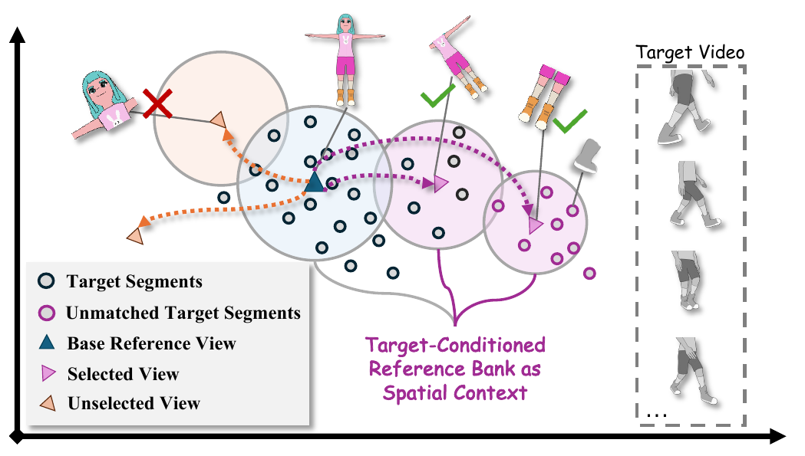
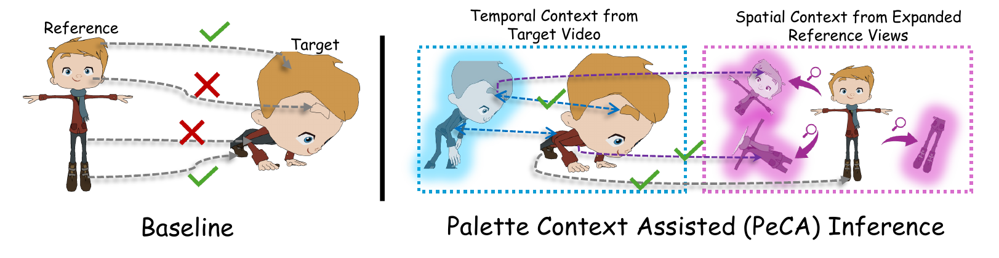
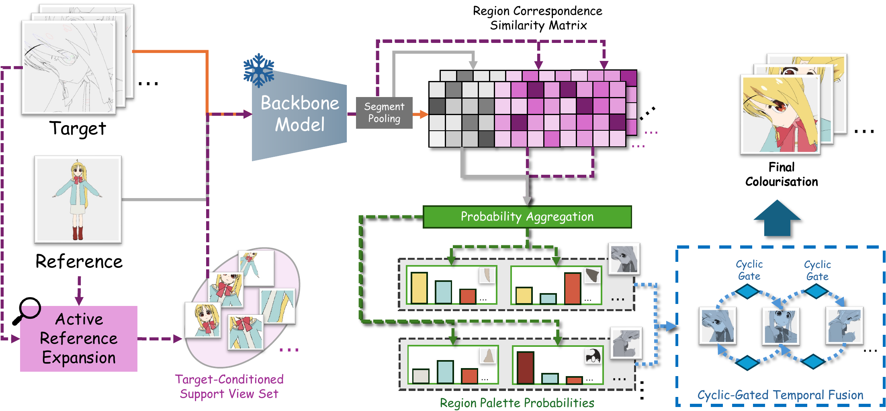
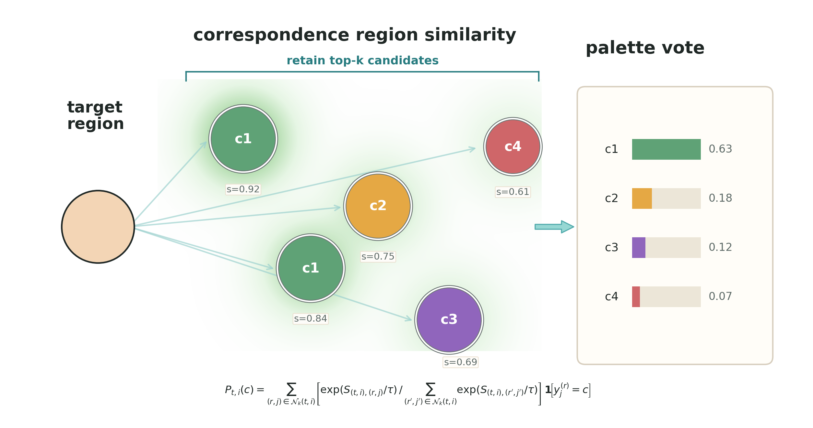
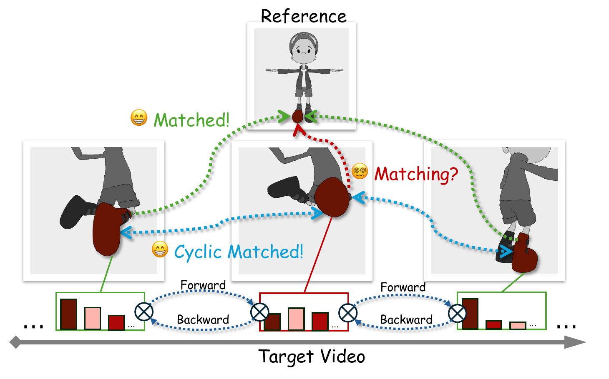
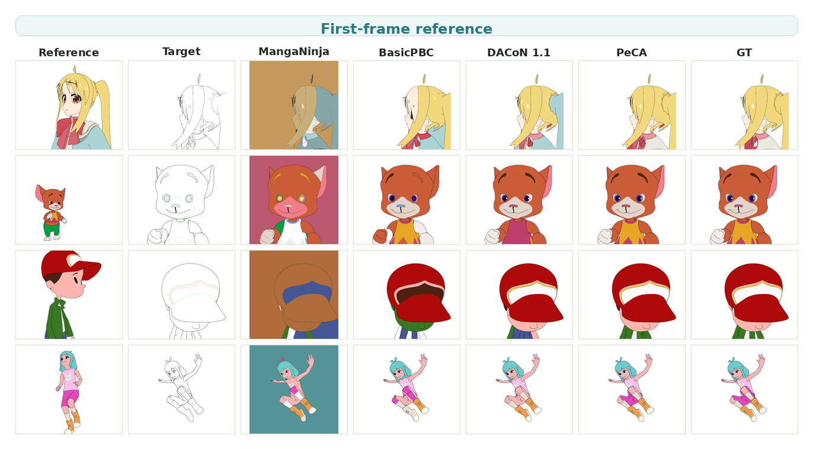
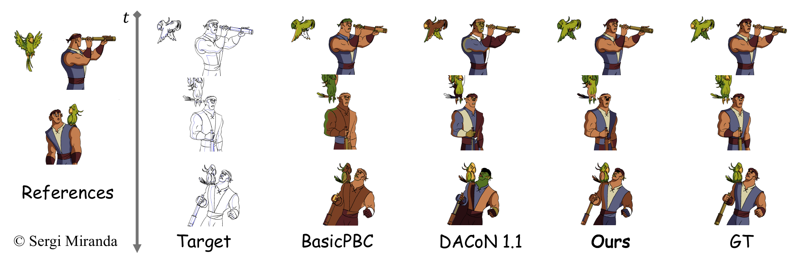
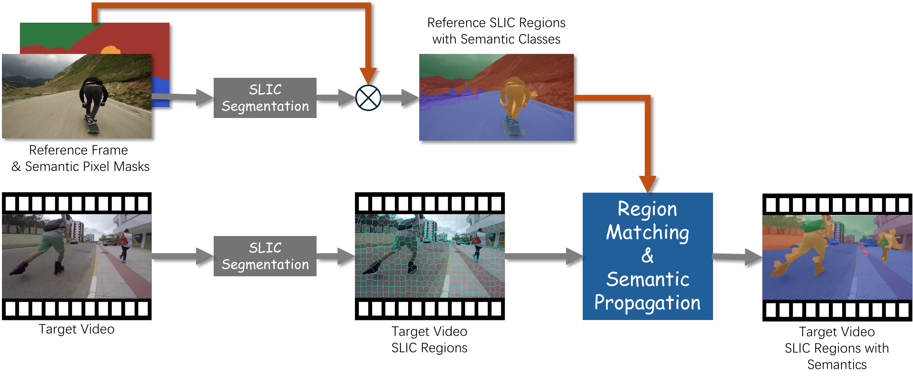
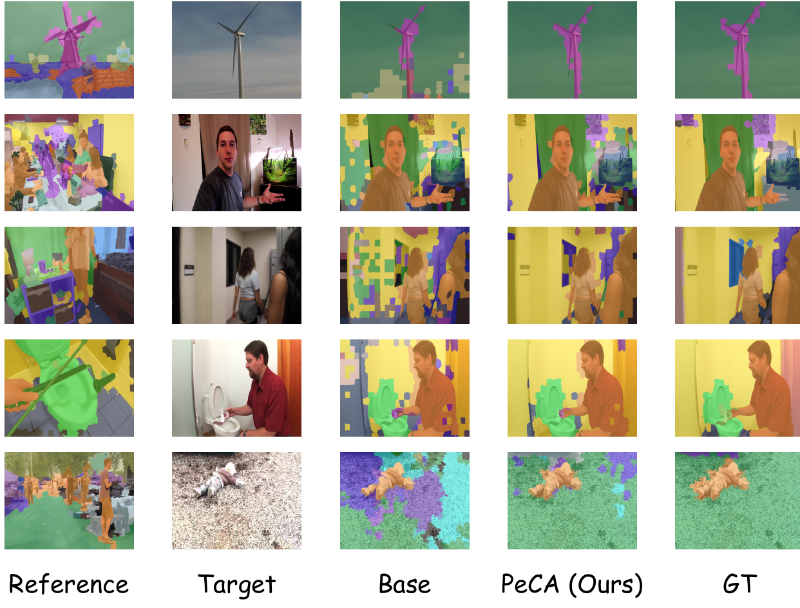

Spatial Context
Active Reference Expansion
Builds a target-aware reference pool from cheap geometric view proposals, then selects useful supports for difficult target frames.
“A colour shines in its surroundings.”
The MIx Group, University of Birmingham

In animation production, paint-bucket colourisation assigns each enclosed region in line sketches a colour from reference design sheets. Recent automatic paint-bucket colourisation pipelines mirror this workflow via region correspondence, but correspondences can be brittle when regions are ambiguous fragments without proper context.
We propose Palette Context Assisted (PeCA), a training-free, plug-and-play framework for animation video colourisation that improves test-time reasoning over spatial and temporal contexts. PeCA strengthens reference coverage, aggregates noisy colour evidence, and refines predictions over time while preserving the production requirement of discrete palette colours.
The input is a target line-art frame and one or more coloured references. The output is not a free-form generated image: each enclosed target region must receive one discrete palette colour from the references. PeCA keeps this paint-bucket interface, but makes the underlying region matching less brittle by adding context at inference time.


Builds a target-aware reference pool from cheap geometric view proposals, then selects useful supports for difficult target frames.

Aggregates top correspondence evidence in colour space, reducing sensitivity to individual spurious region matches.

Uses neighbouring frames as temporal context and gates unreliable matches to avoid propagating colourisation mistakes.
Across diverse settings, PeCA improves region-to-palette assignment while preserving paint-bucket constraints.
| Method / Backbone | Training-free | Acc | Acc-Thresh | Pix-Acc | Pix-F-Acc | Pix-B-MIoU |
|---|---|---|---|---|---|---|
| ColorFlow | ❌ | 9.72 | 10.81 | 50.64 | 9.16 | 57.17 |
| MangaNinja | ❌ | 14.86 | 16.73 | 7.11 | 28.52 | 0.00 |
| AniDoc | ❌ | 19.80 | 22.68 | 77.38 | 46.46 | 87.32 |
| Cobra | ❌ | 15.06 | 17.26 | 69.20 | 19.72 | 82.69 |
| MagicColor | ❌ | 21.48 | 24.81 | 16.34 | 44.04 | 7.63 |
| BasicPBC-Ref | ❌ | 52.55 | 56.73 | 90.53 | 72.33 | 94.56 |
| DACoN | ❌ | 67.87 | 72.58 | 96.99 | 91.00 | 99.08 |
| DACoN 1.1 | ❌ | 68.01 | 72.87 | 96.97 | 91.03 | 99.11 |
| DACoN 1.1 + PeCA | ❌ | 72.04 (+4.03) | 77.08 (+4.21) | 97.90 (+0.93) | 94.04 (+3.01) | 99.42 (+0.31) |
| SAM2.1-Large (Base) | ✅ | 34.54 | 38.95 | 86.76 | 54.12 | 88.37 |
| SAM2.1-Large + PeCA | ✅ | 46.65 (+12.11) | 49.92 (+10.97) | 88.70 (+1.94) | 66.96 (+12.84) | 96.70 (+8.33) |
| DINOv3 ConvNeXT-L (Base) | ✅ | 34.90 | 36.35 | 71.32 | 49.79 | 75.93 |
| DINOv3 ConvNeXT-L + PeCA | ✅ | 45.88 (+10.98) | 46.97 (+10.62) | 80.13 (+8.81) | 60.15 (+10.36) | 85.38 (+9.45) |
| SigLIPv2 ViT-B/16 (Base) | ✅ | 48.64 | 51.68 | 89.24 | 70.05 | 91.03 |
| SigLIPv2 ViT-B/16 + PeCA | ✅ | 55.34 (+6.70) | 58.88 (+7.20) | 92.48 (+3.24) | 80.37 (+10.32) | 93.88 (+2.85) |
| DINOv2 ViT-L/14 (Base) | ✅ | 57.49 | 61.86 | 95.35 | 87.24 | 97.45 |
| DINOv2 ViT-L/14 + PeCA | ✅ | 61.38 (+3.89) | 65.58 (+3.72) | 96.25 (+0.90) | 89.31 (+2.07) | 98.62 (+1.17) |
| # Refs | Method / Backbone | Training-free | Acc | Acc-Thresh | Pix-Acc | Pix-F-Acc | Pix-B-MIoU |
|---|---|---|---|---|---|---|---|
| 5-shot | ColorFlow | ❌ | 12.64 | 14.37 | 54.51 | 15.26 | 61.22 |
| BasicPBC-Ref | ❌ | -- | 64.59 | 96.12 | 83.17 | 98.67 | |
| DACoN | ❌ | 73.25 | 77.44 | 97.74 | 93.70 | 99.13 | |
| DACoN 1.1 | ❌ | 73.91 | 78.23 | 97.84 | 94.28 | 98.92 | |
| DACoN 1.1 + PeCA | ❌ | 77.73 (+3.82) | 82.39 (+4.16) | 98.87 (+1.03) | 97.02 (+2.74) | 99.45 (+0.53) | |
| SAM2.1-Large (Base) | ✅ | 43.80 | 46.59 | 87.66 | 62.25 | 96.75 | |
| SAM2.1-Large + PeCA | ✅ | 57.23 (+13.43) | 60.96 (+14.37) | 91.50 (+3.84) | 76.52 (+14.27) | 97.18 (+0.43) | |
| DINOv2 ViT-L/14 (Base) | ✅ | 62.65 | 66.42 | 96.77 | 91.54 | 97.96 | |
| DINOv2 ViT-L/14 + PeCA | ✅ | 66.46 (+3.81) | 70.01 (+3.59) | 97.73 (+0.96) | 93.57 (+2.03) | 98.83 (+0.87) | |
| max-shot | DACoN | ❌ | 74.31 | 78.48 | 98.04 | 94.27 | 99.10 |
| DACoN 1.1 | ❌ | 75.05 | 79.23 | 98.19 | 94.79 | 99.16 | |
| DACoN 1.1 + PeCA | ❌ | 79.03 (+3.98) | 83.43 (+4.20) | 99.01 (+0.82) | 97.21 (+2.42) | 99.55 (+0.39) | |
| SAM2.1-Large (Base) | ✅ | 46.40 | 49.30 | 87.98 | 63.27 | 96.59 | |
| SAM2.1-Large + PeCA | ✅ | 56.88 (+10.48) | 60.50 (+11.20) | 91.94 (+3.96) | 77.49 (+14.22) | 97.29 (+0.70) | |
| DINOv2 ViT-L/14 (Base) | ✅ | 63.84 | 67.67 | 97.07 | 91.70 | 98.28 | |
| DINOv2 ViT-L/14 + PeCA | ✅ | 67.28 (+3.44) | 70.82 (+3.15) | 97.71 (+0.64) | 93.63 (+1.93) | 98.59 (+0.31) |

| Method / Backbone | Training-free | PBC-3D | PBC-Real | ||||||||
|---|---|---|---|---|---|---|---|---|---|---|---|
| Acc | Acc-Thresh | Pix-Acc | Pix-F-Acc | Pix-B-MIoU | Acc | Acc-Thresh | Pix-Acc | Pix-F-Acc | Pix-B-MIoU | ||
| BasicPBC | ❌ | 56.28 | 60.14 | 93.00 | 77.25 | 97.19 | 59.31 | 62.00 | 91.84 | 72.50 | 98.39 |
| BasicPBC (Online*) | ❌ | 53.18 | 58.28 | 93.57 | 79.92 | 96.19 | 57.28 | 60.47 | 92.74 | 74.92 | 98.35 |
| DACoN | ❌ | 69.91 | 73.59 | 97.30 | -- | -- | 65.85 | 69.15 | 93.50 | -- | -- |
| DACoN 1.1 | ❌ | 70.34 | 74.04 | 97.30 | 91.13 | 99.17 | 65.82 | 69.11 | 94.18 | 80.68 | 98.76 |
| Nano Banana 2 | ❌ | -- | -- | -- | -- | -- | 47.78 | 52.17 | 90.39 | 71.63 | 98.46 |
| DACoN 1.1 + PeCA | ❌ | 74.41 | 78.08 | 98.11 | 94.06 | 99.50 | 67.64 | 71.29 | 94.70 | 82.11 | 99.48 |
| StableDiffusion 2.1 (Base) | ✅ | 32.93 | 34.52 | 87.38 | 58.70 | 94.40 | 46.45 | 48.84 | 89.91 | 64.13 | 97.96 |
| StableDiffusion 2.1 + PeCA | ✅ | 40.50 | 42.01 | 90.87 | 71.01 | 96.51 | 48.11 | 49.70 | 90.89 | 67.45 | 98.18 |
| SAM2.1-Large (Base) | ✅ | 49.10 | 52.46 | 91.64 | 72.40 | 97.38 | 55.63 | 58.31 | 90.32 | 69.21 | 98.73 |
| SAM2.1-Large + PeCA | ✅ | 58.98 | 62.89 | 93.65 | 79.72 | 98.11 | 60.41 | 63.44 | 93.25 | 75.99 | 99.00 |
| * Online setting: the first frame uses the ground-truth reference, and each subsequent frame is colourised using the previous frame's prediction as the reference. | |||||||||||

| Method / Backbone | Training-free | PBC-3D | Anita-Pirate | ||||||||
|---|---|---|---|---|---|---|---|---|---|---|---|
| Acc | Acc-Thresh | Pix-Acc | Pix-F-Acc | Pix-B-MIoU | Acc | Acc-Thresh | Pix-Acc | Pix-F-Acc | Pix-B-MIoU | ||
| BasicPBC | ❌ | 63.38 | 67.77 | 94.84 | 84.20 | 97.54 | 28.54 | 28.97 | 88.52 | 39.77 | 96.63 |
| BasicPBC (Online*) | ❌ | 53.97 | 59.13 | 93.74 | 80.62 | 96.32 | 7.71 | 7.94 | 32.97 | 17.00 | 35.93 |
| DACoN 1.1 | ❌ | 78.02 | 82.11 | 98.48 | 95.51 | 99.47 | 38.16 | 39.36 | 94.29 | 61.65 | 99.16 |
| DACoN 1.1 + PeCA | ❌ | 80.80 | 84.82 | 99.00 | 97.18 | 99.58 | 41.24 | 42.16 | 94.29 | 62.78 | 99.43 |
| DINOv2 ViT-L/14 (Base) | ✅ | 66.25 | 70.17 | 97.73 | 93.36 | 98.89 | 28.55 | 29.30 | 93.06 | 53.88 | 99.40 |
| DINOv2 ViT-L/14 + PeCA | ✅ | 69.29 | 72.60 | 98.23 | 94.49 | 99.33 | 31.01 | 31.81 | 93.39 | 57.18 | 99.49 |
| * Online setting: the first frame uses the ground-truth reference, and each subsequent frame is colourised using the previous frame's prediction as the reference. | |||||||||||
The same idea can be tested outside cartoon colourisation by replacing palette colours with semantic labels. In the VIPSeg diagnostic, reference frames provide panoptic semantic labels, target frames are over-segmented into SLIC superpixels, and the task is to propagate semantic labels from reference regions to target regions by matching region descriptors.

| Backbone | Pipeline | Seg-Acc | Pix-Acc | Pix-MIoU |
|---|---|---|---|---|
| SAM2.1-Large | Base | 33.35 | 33.05 | 6.78 |
| SAM2.1-Large | PeCA (ours) | 38.95 | 38.79 | 10.85 |
| DINOv2 ViT-L/14 | Base | 44.12 | 44.03 | 12.68 |
| DINOv2 ViT-L/14 | PeCA (ours) | 52.47 | 52.38 | 19.23 |
Evaluation uses the VIPSeg validation split: 343 videos and 8,255 frames. Metrics are frame-wise averages over SLIC superpixel predictions.

@inproceedings{lin2026peca,
title = "PeCA: Palette Context Assisted Inference for Test-Time Paint-Bucket Colourisation on Animation Videos",
author = "Dongheng Lin and Jianbo Jiao",
note = "The 19th European Conference on Computer Vision, ECCV 2026 ; Conference date: 08-09-2026 Through 12-09-2026",
year = "2026",
language = "English",
series = "Lecture Notes in Computer Science",
publisher = "Springer",
booktitle = "Computer Vision – ECCV 2026",
url = "https://eccv.ecva.net/Conferences/2026",
}